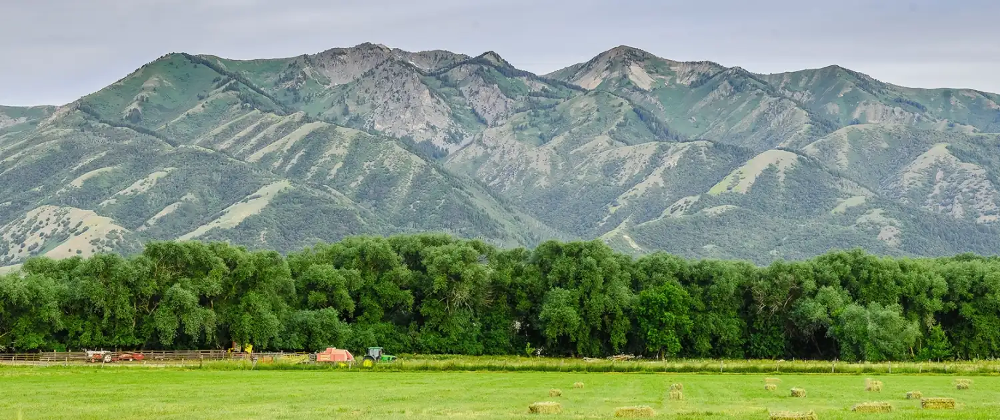

Zackary Bates
About Me
My name is Zackary Bates, but you can call me Zack. I'm from Wellsville Utah, a small town filled with suburbs and rural land. I'm currently working as a Quality Assurance Admin for Fox Pest Control. I'm currently working full time and going to school full time at the same time.

Wellsville, Utah

Wellsville is a small town within Cache Valley. It sits at the foothills of the Wellsville Mountains, the steepest and narrowest mountains within the Rocky Mountains. It was founded in 1856, and named after Daniel H. Wells, a leader in the church at the time.